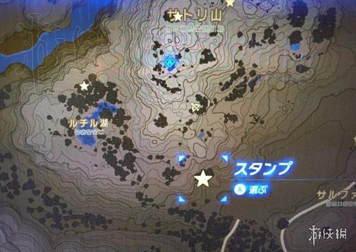

不少小伙伴们不清楚塞尔达传说荒野之息游戏中的金色甲虫去哪里找，今天小编就为大家带来玩家“白花”分享的塞尔达传说荒野之息金色甲虫位置一览，有需要的朋友们不妨来看看吧！
金色甲虫位置一览
山神在的那个山，如果那个山上冒青光了，就是山神出现了，这个时候去那座山的周围找，有一颗大树上，会爬满了各种各样的独角仙，其中包括了黄金独角仙，而且数量很多！
在这个星星的位置，记得是晚上来，跟Satori山顶发光的时候。
